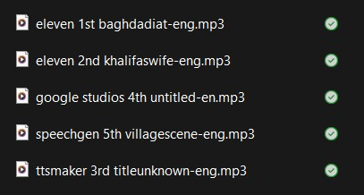
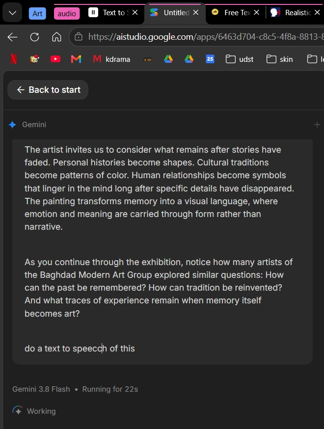
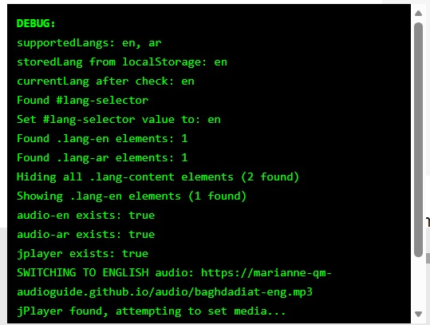
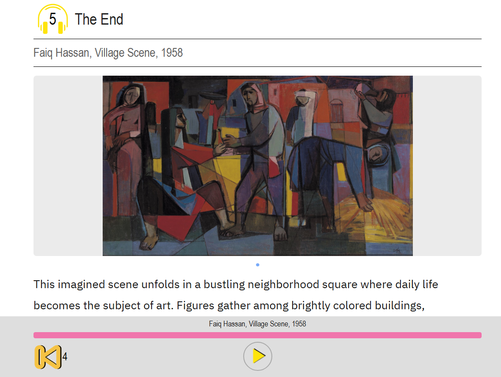

Week 2 Internship Report
First Week (Sunday - Thursday)
Sunday:When I received the new assignment, I created a new GitHub account to work on the audio guide pages. I started by exploring the ACMI audio guide to understand how it works, what is included in the repository, and which parts I could modify for our project. After that, I gathered the required images and created the transcripts for the new exhibition, *What Lingers in the Artist’s Mind*, at Mathaf. Once I finished the transcripts, I selected several text-to-speech websites to test. These included TTSMaker, SpeechGen.io, Google AI Studio, and ElevenLabs. I created the audio in three languages: Arabic, Filipino, and English. For the Filipino, I only made an audio for one stop, and the rest with Arabic. However, I tested the other Filipino transcripts and checked it myself. When I first started configuring the pages, I wanted the multilingual option to stick throughout all the stops, so when the user selects Arabic, it will play the arabic audio for all stops. However, I encountered an issue with the multilingual option. Although I could select a language, the page would not provide the audio in the selected language.


Monday:I added debugging features to the pages so I could identify what was causing the issue with the script. After reviewing the configuration and testing the pages, I was able to solve the issue. The problem was caused by the JavaScript code. Once the multilingual functionality was working properly, I started working on the fonts and color scheme of the pages. I followed the Mathaf color guide and tested different fonts to find one that matched the overall design. I also created the icons myself to make sure they matched the required color scheme and the visual style of the audio guide. After completing the design, I double-checked all the audio files for the audio guide. During this process, I noticed an incorrect pronunciation in the Filipino audio for one of the stops. The word was **“tauhan,”** but the AI-generated audio pronounced it as **“tawhan.”** The correct pronunciation should be **“ta-u-han,”** so I identified this as an issue that needed to be corrected.

Tuesday:I started by removing the debugging features, as everything appeared to be working properly. After that, I continued working on the CSS and overall layout of the pages, taking some time to refine the design and make sure everything looked consistent. I edited the layout files, main CSS, and configuration files to customize the audio guide according to the design I wanted. I then decided to change the headphone icon colors to match the yellow used by Qatar Museums. I also added small design details, such as hover effects and adjustments to the font sizes, to make the pages more visually appealing while keeping the overall design clean and professional.

Wednesday: